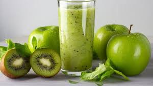

Beneficios: Rico en vitamina C, refuerza el sistema inmunológico y mejora la salud de la piel.
Ingredientes:
4 naranjas
Procedimiento:
Exprime las naranjas para obtener el jugo.
Cuela el jugo para eliminar la pulpa si lo prefieres más suave.
Sírvelo inmediatamente.
2. Jugo de Piña
Beneficios: Contiene bromelina, una enzima que ayuda en la digestión y tiene propiedades antiinflamatorias.
Ingredientes:
1 piña mediana
1 taza de agua
Procedimiento:
Pela la piña y córtala en trozos.
Licúa la piña con una taza de agua hasta obtener una mezcla suave.
Cuela el jugo si prefieres una textura más fina.
Sírvelo frío.
El jugo de manzana es refrescante y delicioso. Adem�s, es una buena fuente de fibra y vitaminas, lo que ayuda a mantener el sistema digestivo saludable y a controlar los niveles de colesterol en la sangre.
3. Jugo de Sandía
Beneficios: Hidratante y refrescante, rico en antioxidantes y vitaminas A y C.
Ingredientes:
4 tazas de sandía en trozos (sin semillas)
Procedimiento:
Coloca los trozos de sandía en la licuadora.
Licúa hasta obtener una mezcla suave.
Cuela el jugo para eliminar la pulpa si lo prefieres más claro.
Sírvelo bien frío.

4. Jugo de Kiwi y Manzana
Beneficios: Alto contenido de vitamina C y fibra, ayuda a la digestión y mejora la salud del corazón.
Ingredientes:
4 kiwis
2 manzanas verdes
1 taza de agua
Procedimiento:
Pela los kiwis y córtalos en trozos.
Corta las manzanas en trozos, retirando el corazón y las semillas.
Licúa los kiwis y las manzanas con una taza de agua hasta obtener una mezcla homogénea.